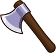
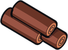
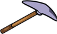
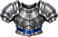
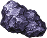

Titanium Bar
Obtaining
- Made with Blacksmithing level 65 at a Furnace
Used to make
| Item | Skill | Needs | Where |
|---|---|---|---|
 Titanium Axe ×1 | Blacksmithing 60 | 2 × Titanium Bar, 1 ×  Yew Logs | Anvil |
 Titanium Pickaxe ×1 | Blacksmithing 60 | 2 × Titanium Bar, 1 × Yew Logs | Anvil |
 Titanium Armor ×1 | Blacksmithing 75 | 5 × Titanium Bar, 2 × Dragon Scale | Anvil |
Creation
| Skill | Makes | Needs | Where | Tool |
|---|---|---|---|---|
| Blacksmithing 65 | 1 | 2 ×  Chunk of Titanium | Furnace |